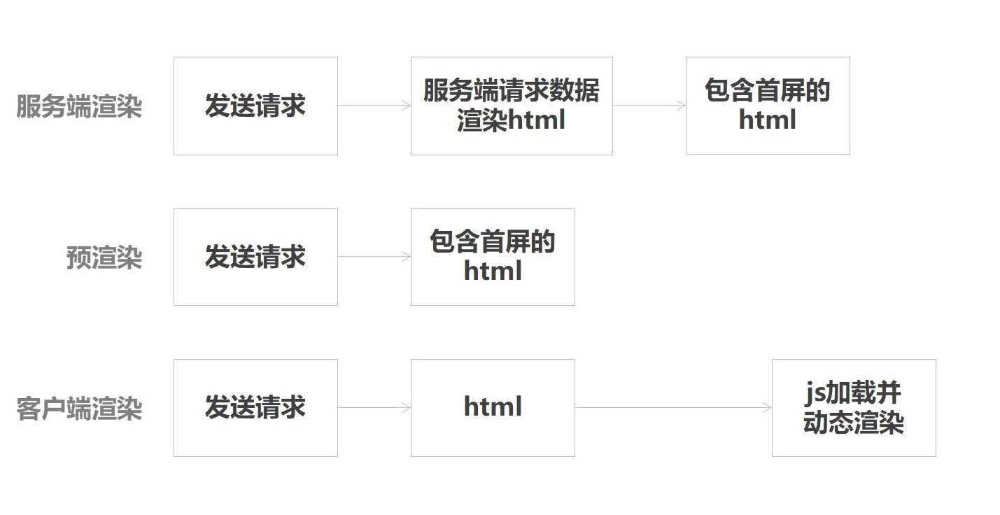
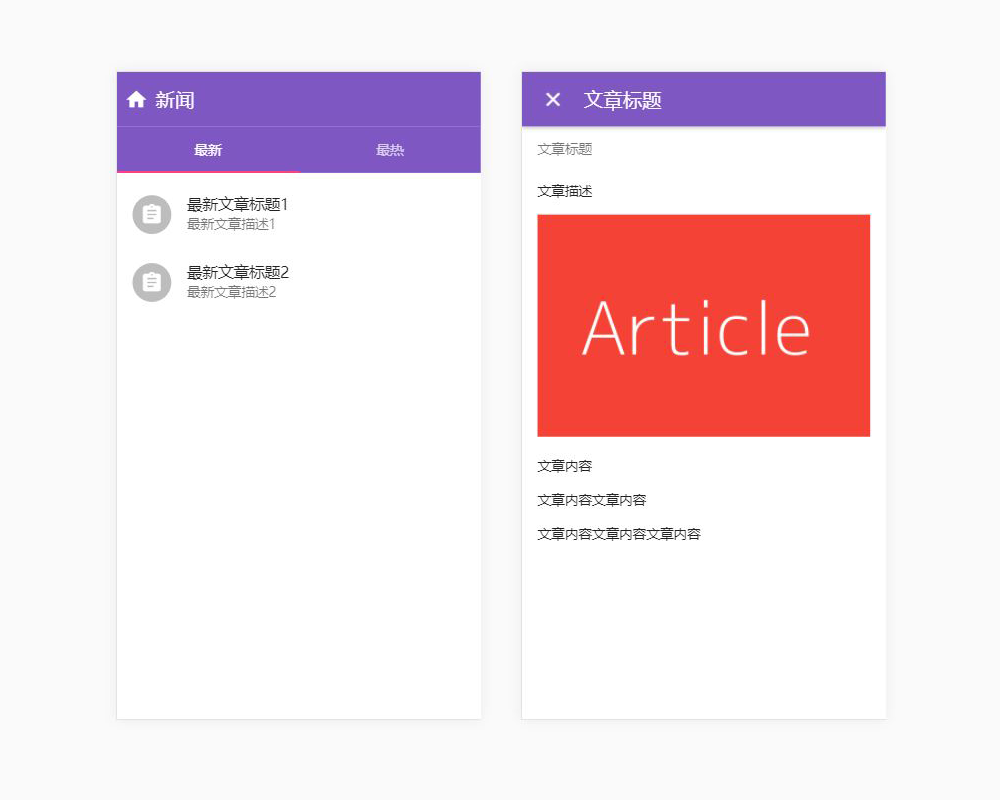
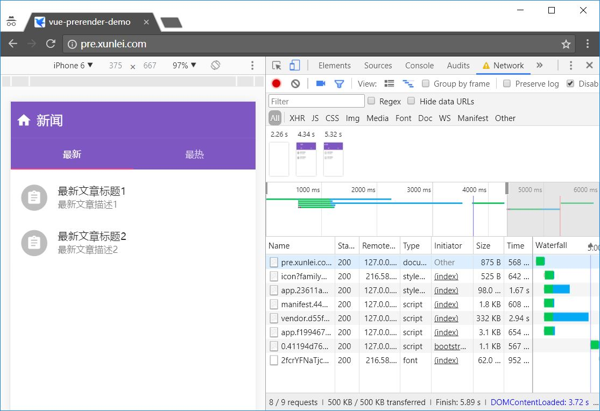
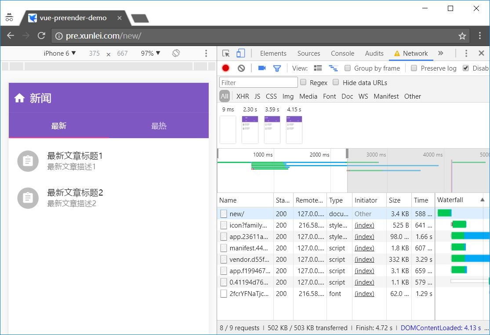
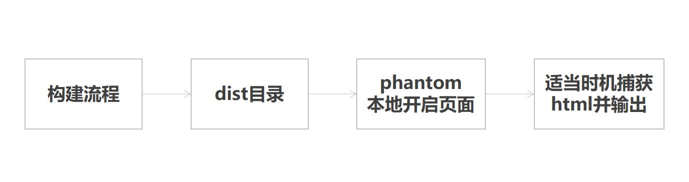
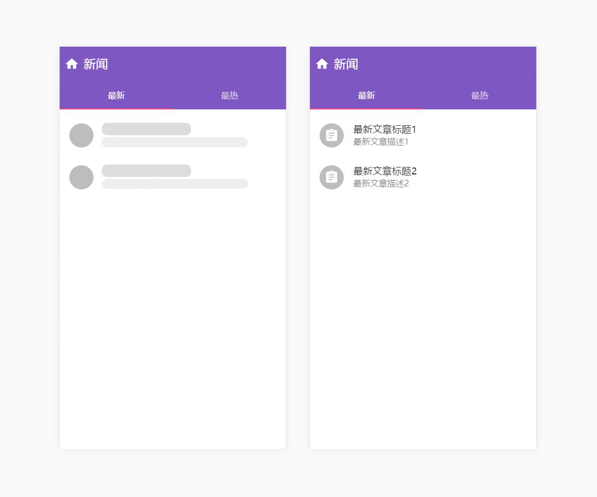

前言
Ajax 技术的出现，让我们的 Web 应用能够在不刷新的状态下显示不同页面的内容，这就是单页应用。在一个单页应用中，往往只有一个 html 文件，然后根据访问的 url 来匹配对应的路由脚本，动态地渲染页面内容。单页应用在优化了用户体验的同时，也给我们带来了许多问题，例如 SEO 不友好、首屏可见时间过长等。服务端渲染（SSR）和预渲染（Prerender）技术正是为解决这些问题而生的。
阅读本文，你能够了解到什么是预渲染、预渲染与服务端渲染的异同以及预渲染在 Vue.js 项目中的使用。
服务端渲染与预渲染
一些概念
- 客户端渲染：用户访问 url，请求 html 文件，前端根据路由动态渲染页面内容。关键链路较长，有一定的白屏时间；
- 服务端渲染：用户访问 url，服务端根据访问路径请求所需数据，拼接成 html 字符串，返回给前端。前端接收到 html 时已有部分内容；
- 预渲染：构建阶段生成匹配预渲染路径的 html 文件（注意：每个需要预渲染的路由都有一个对应的 html）。构建出来的 html 文件已有部分内容。
下图简单展示了客户端渲染、服务端渲染和预渲染的请求流程。

本文示例使用 vue-cli 生成，点击这里查看示例。dist 目录是启用了预渲染的打包目录，dist2 目录则是普通客户端渲染的打包目录。通过对比目录中的文件，你可以对预渲染有个初步的了解。若你还是不知道什么是预渲染，不妨先通读全文。
共同点
针对单页应用，服务端渲染和预渲染共同解决的问题：
- SEO：单页应用的网站内容是根据当前路径动态渲染的，html 文件中往往没有内容，网络爬虫不会等到页面脚本执行完再抓取；
- 弱网环境：当用户在一个弱环境中访问你的站点时，你会想要尽可能快的将内容呈现给他们。甚至是在 js 脚本被加载和解析前；
- 低版本浏览器：用户的浏览器可能不支持你使用的 js 特性，预渲染或服务端渲染能够让用户至少能够看到首屏的内容，而不是一个空白的网页。
预渲染能与服务端渲染一样提高 SEO 优化，但前者比后者需要更少的配置，实现成本低。弱网环境下，预渲染能更快地呈现页面内容，减少页面可见时间。
不适合的场景
那什么场景下不适合使用预渲染呢：
- 个性化内容：对于路由是 /my-profile 的页面来说，预渲染就失效了。因为页面内容依据看它的人而显得不同；
- 经常变化的内容：如果你预渲染一个游戏排行榜，这个排行榜会随着新的玩家记录而更新，预渲染会让你的页面显示不正确直到脚本加载完成并替换成新的数据。这是一个不好的用户体验；
- 成千上万的路由：不建议预渲染非常多的路由，因为这会严重拖慢你的构建进程。
Prerender SPA Plugin
prerender-spa-plugin 是一个 webpack 插件用于在单页应用中预渲染静态 html 内容。因此，该插件限定了你的单页应用必须使用 webpack 构建，且它是框架无关的，无论你是使用 React 或 Vue 甚至不使用框架，都能用来进行预渲染。本文示例基于 Vue.js 2.0 + vue-router。
下文会从生成项目讲起，然后看下没有配置预渲染前的样子，再配置预渲染进行构建，对比前后的差别。
生成项目
首先生成一个项目并安装依赖。
1 | vue init webpack vue-prerender-demo |
组件开发过程我们不关注，具体可以查看示例源代码。开发完成视图如下。

路由配置
这是一个新闻应用的页面，包括了最新、最热两个列表页和一个文章页。路由配置如下。
1 | new Router({ |
预渲染的单页应用路由需要使用 History 模式而不是 Hash 模式。原因很简单，Hash 不会带到服务器，路由信息会丢失。vue-router 启用 History 模式参考这里。
History 模式需要后台配置支持，最简单的是通过 nginx 配置 try_files 指令。
1 | location / { |
没有配置预渲染前
配置完成后执行构建 npm run build，根据 nginx 配置，现在无论访问哪个路由都会返回 dist/index.html。
访问 / 路由。

可以看到，在 Fast 3G 网络下，首屏可见时间是 4.34s，页面至少在加载下面文件后才能被看到。
- html
- app.css - 样式
- manifest.js - webpack manifest
- vendor.js - 第三方库
- app.js - 业务逻辑
- 0.js - 路由分包文件
其中 vendor 文件包含了引用的第三方库，文件规模较大。加载文件多，增加了白屏时间。所以，最有效的优化方案是减少首屏依赖文件。这里开始配置预渲染。
预渲染配置
安装 prerender-spa-plugin，安装时件略长，因为其依赖了 phantomjs，请耐心等待。
1 | npm install prerender-spa-plugin --save-dev |
我们只在生产环境中进行预渲染，修改 build/webpack.prod.conf.js，在配置插件的地方加入如下代码。
1 | var path = require('path') |
实例化 PrerenderSpaPlugin 需要至少两个参数，第一个参数是单页应用的输出目录，第二个参数指定预渲染的路由，这里执行了两个路由 /new 和 /hot。执行构建 npm run build。
预渲染效果
访问 /new 路由。

同样在 Fast 3G 网络下，首屏可见时间缩短至 2.30s。事实上，只要加载 html 和 app.css 文件，页面内容就能看到了。
1 | dist |
对比构建完成目录，可以发现预渲染的目录多了两个文件 new/index.html, hot/index.html。
查看 new/index.html
1 |
|
相比 index.html, new/index.html 中的 <div id="app"></div> 是有内容的，且 <head></head> 中多了当前路由分包的 js 文件。其余部分跟 index.html 一样。虽然有多个 html，但从 /new 跳转到其他路由时，还是单页内跳转的，不会有新的 html 请求。
根据上面配置的 nginx 规则，路由对应的返回文件分别是：
1 | / -> index.html |
其中，/new 和 /hot 路由返回的 html 包含了对应路由的内容，从而实现预渲染。没有配置预渲染的路由跟原来一样，还是访问 /index.html，请求脚本，动态渲染。
预渲染达到了类似服务端渲染的效果。区别在于预渲染发生在构建时，服务端渲染发生在服务器处理请求时。
prerender-spa-plugin 原理
那么 prerender-spa-plugin 是如何做到将运行时的 html 打包到文件中的呢？原理很简单，就是在 webpack 构建阶段的最后，在本地启动一个 phantomjs，访问配置了预渲染的路由，再将 phantomjs 中渲染的页面输出到 html 文件中，并建立路由对应的目录。

查看 prerender-spa-plugin 源码 prerender-spa-plugin/lib/phantom-page-render.js。
1 | // 打开页面 |
最佳实践
指定捕获钩子
默认情况下 html 会在脚本执行完被捕获并输出。你也可以指定一些钩子，html 将会在特定时机被捕获。
1 | var path = require('path') |
预渲染骨架屏
本文实例中更多是变化的数据，时效性要求比较高，不太适合预渲染的场景。如果想用预渲染来减少白屏时间，让页面反馈更及时的话，可以预渲染骨架屏。
1 | <template> |
请求 news 数据需要一定时间，所以插件在脚本执行完捕获的一般就是骨架屏。如果你想更灵活地指定捕获时机，可以使用自定义事件钩子，在组件挂载且请求数据前捕获。
1 | { |

访问页面时，用户首先看到预渲染的骨架屏（左图），等待 js 加载完成后，再拉取数据渲染出正确的内容。
代理完整路径
如果你配置了引用资源链接为带域名的完整路径。
1 | // config/index.js |
那么构建时需要将域名代理到本地，否则 prerender-spa-plugin 捕获的将会是线上的代码。
1 | 127.0.0.1 www.example.com |
预渲染根路由
通常情况下，动态路由如 /users/:id 不会配置预渲染，因为你没法枚举出所有的 User ID。访问动态路由时，服务器会返回根路由 / 的 html，所以根路由也不适合做预渲染。但根路由往往是一个网站的首页，是访问量最大的一个路由。通过一些 nginx 可以解决这个问题。
1 | location = / { |
用户访问 / 路由，实际上是访问了 /home/index.html，用 router 中配置的 /home 作为首页。/index.html 可以作为其他没有匹配到路由的响应。
结语
预渲染是实现成本较低，效果提升明显的性能优化方案。预渲染有它适合的场景，当你的页面内容变化不大，又想让它更快地呈现给用户时，试试预渲染吧。